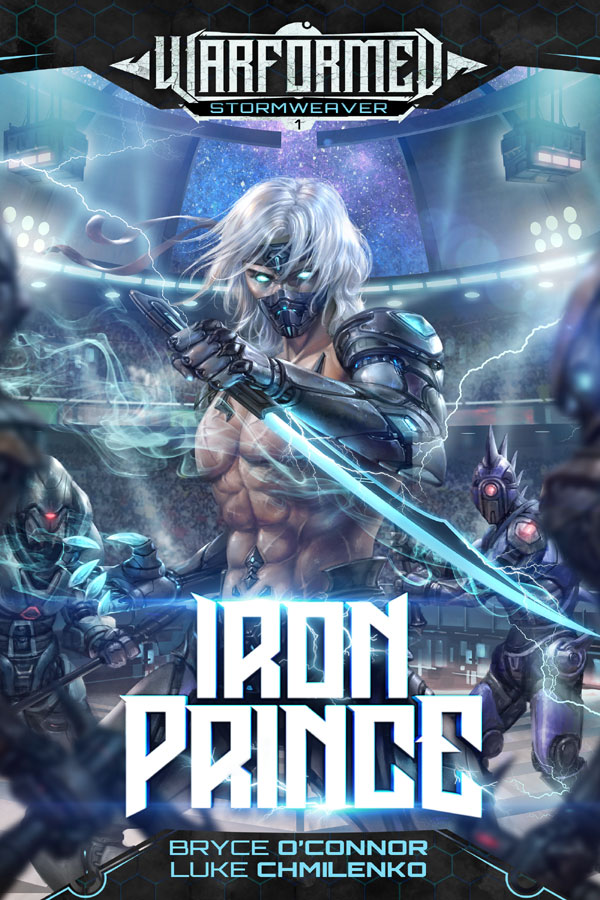

Warformed: Stormweaver — If You Liked Victor of Tucson

Bryce O'Connor's Stormweaver series follows Reidon "Rei" Ward at the Galens Institute, where cadets train and fight using Devices — massive combat rigs called CADs. Rei starts as the weakest cadet in the whole damn school and claws his way up through Sectionals, the tournament that pits him and his squad against some of the best Users in the system.
Grounded growth, earned progress
What I liked most is Rei's rise never feels handed to him — every rank he climbs, he pays for. His Device Shido turning out to be more than it looks gives the series a mystery thread on top of the usual academy-tournament setup. Squad dynamics with Aria, Viv, Catcher and the rest add some found-family energy without slowing shit down.
Solid 7.5/10 — easy recommend for anyone who wants their progression fantasy served with an academy setting and tournament arcs instead of dungeon crawling.